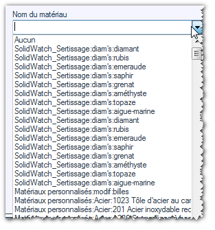
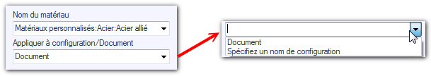

Opération possible sur les pièces.
Cette opération permet d'appliquer un matériau spécifique à la pièce.
Le matériau est à choisir parmi la liste déroulante proposant la liste de tous les matériaux contenus dans les fichiers "sldmat" définis par les chemins de recherche dans les options générales de SOLIDWORKS :
Options / Emplacements des fichiers / Bases de données de matériaux

Le nom du matériau doit respecter cette syntaxe : Nom du fichier base:catégorie:matériau car un même nom de matériau peut être présent dans plusieurs bases.
Exemple :
Le matériau "Acier allier" est appliqué sur le document. On peut éventuellement appliquer le matériau sur une configuration nommée.
